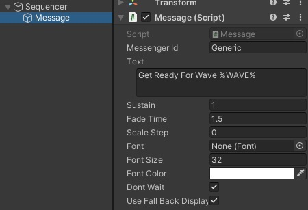
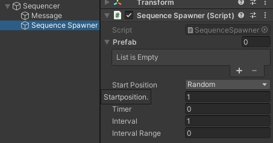
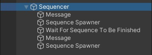
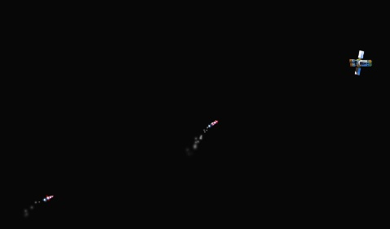

Sequencer / Getting Started
This small tutorial will show you how to add the sequencer to your scene, have it display a message, spawn an attack wave, wait for the attacker to be destroyed and continue with the next.Setup
First create a new scene and add a player sprite to your scene.To add a player use the Unity menu by selecting Playniax > Prototyping > Sprites > Players > Player (Spaceship Weaponized)
Message
To add a message use the Unity menu by selecting Playniax > Sequencer > MessageThis should add a GameObject to the sequencer called Message.
Select message to see the settings in the inspector:

Press the Unity play button to see the result.
A message will display the text Get Ready For Wave 1 where %WAVE% fetches the correct wave number.

Stop de scene from running.
You can determine how long the text is displayed by setting the sustain and fade time.
Feel free to play around and change text, font, fontsize etc.
Sequence Spawner
You can add a spawner by using the Unity menu and selecting Playniax > Sequencer > Sequence SpawnerThis should add a spawner to the sequencer:

We can now set or add a prefab or prefabs to the spawner and determine position, counter, interval, etc.
Follow these steps:
1. Set or add the following prefab Assets/Playniax/Framework/Prototyping/Prefabs/Enemies/Rocket.prefab to the spawner.
2. Change the counter to 10 (these are the number of objects to be spawned)
Press the Unity play button to see the result.
You will see a message on the screen followed by a bunch of rockets attacking the player.
Stop de scene from running.
Wait For Sequence To Be Finished
Once a spawner is finished the sequencer continues to the next (if present).It is possible to create a delay or pause between each sequencer operation.
If you don't add a delay or pause the sequencer will wait for the operation to be finished but not for all the spawnerd objects to be destroyed.
So add a wait command by using the Unity menu and select Playniax > Sequencer > Wait For Sequence To Be Finished
The sequencer should now wait until the last spawned objects are completly destroyed and move on to the next if present.
Add another message and spawner and repeat steps 1 and 2.
The final tree should look like this:

Press the Unity play button to see the result.

Example can be found in Assets/Playniax/Framework/Extensions/Sequencer/Tutorials/Get Started.unity